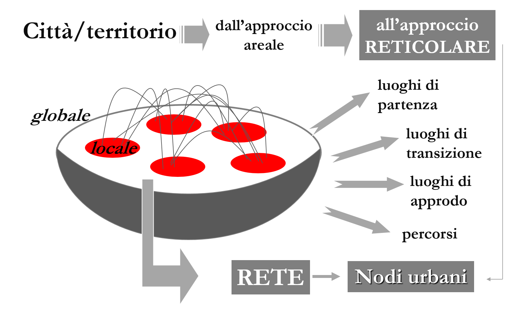

| Mondializzazione | |
|  La connettività dei territori |
La mondializzazione, è bene ricordarlo, assume il
movimento generalizzato, - degli individui, degli oggetti, dei beni materiali e
immateriali – e la diffusione delle tecnologie dell’informazione e della
comunicazione, come fenomeni che hanno riconfigurato le città sia negli aspetti
economici, culturali e sociali, sia in
quelli territoriali mostrando i luoghi catalizzatori di funzioni che variano
nel tempo o nella pratica quotidiana. Diventano luoghi di partenza, di
transito, di approdo o altro in funzione delle dinamiche territoriali,
rimettendo in gioco anche le categorie analitiche fino a qui utilizzate per
spiegarli. In questo senso, quelle che fanno riferimento alle suddivisioni
areali - amministrative, politiche o altro - basate sulla logica della settorializzazione
si mostrano assolutamente inadeguate. Bisogna partire dal presupposto che il mondo
globalizzato è composto da tanti locali ma la sua dimensione globale non è
semplicemente la loro somma, bensì è qualcosa di diverso e più ampio che
richiama inediti fenomeni di interconnessione che vanno compresi. Per tale
ragione i luoghi devono essere analizzati mediante il concetto della rete, più adatta a coglierne il
significato in rapporto all’abitante e
al fattore tempo. Insomma, se alla base della vita contemporanea c’è il
movimento l’elemento da cui partire
sono le persone (attori della mobilità), e i luoghi della città devono
essere considerati come nodi della rete che si viene a creare (Urry, 2007; Lévy, Lussault,
2003). |